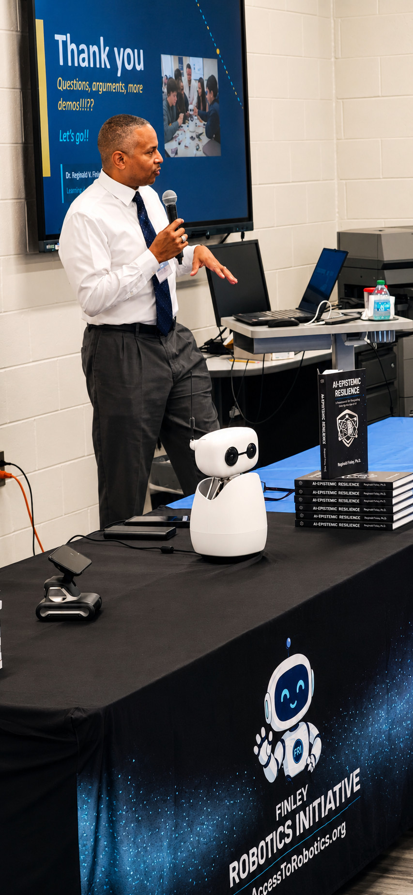
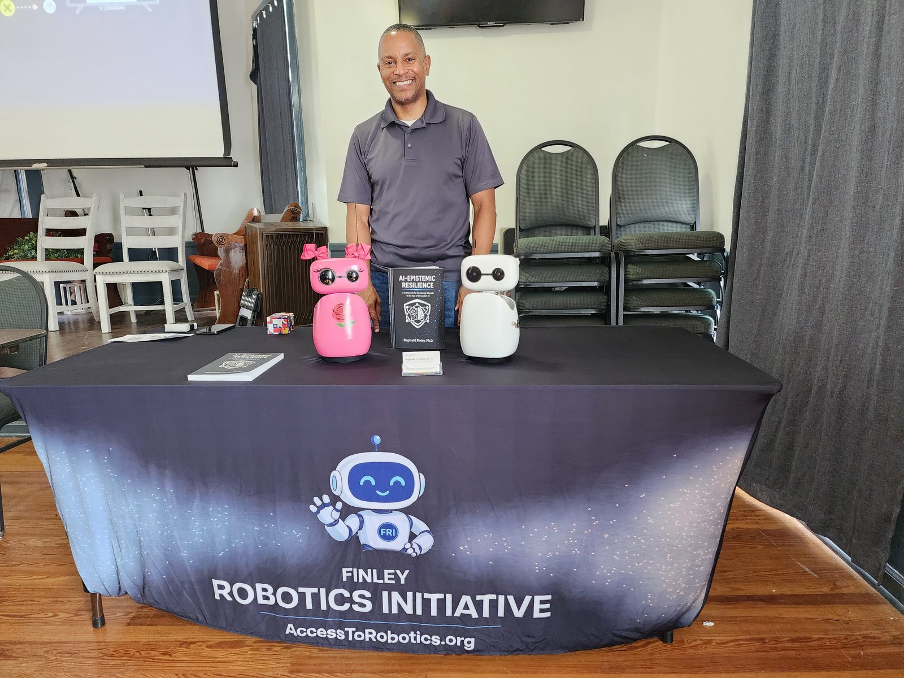
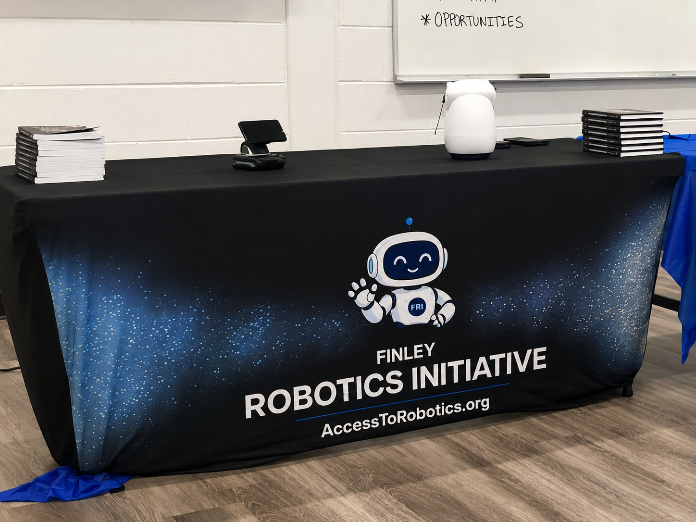
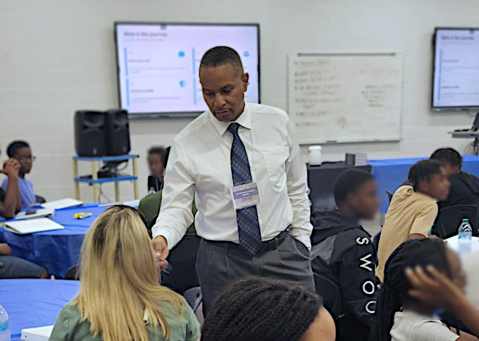

Bringing AI literacy directly into schools and community spaces.
Dr. Finley delivers structured talks on artificial intelligence, large language models, and the habits of clear thinking in a world of synthetic knowledge. One talk is built for students, one for adult and community audiences, and both end with a live demonstration of the Initiative's robots. Available to schools, libraries, museums, civic groups, and community organizations.
Smart Tools, Sharper Minds
Preparing for an AI-Generated Future
A forty-five-minute talk built for grades seven through twelve, with a teacher-friendly version for staff development. The talk walks an audience from "what an LLM actually is" to "what to do when the photo, the audio, and the article can all be fake," ending with a live demonstration of embodied AI robots students can program themselves.
The framework that runs through the talk is the same one developed in Dr. Finley's recent book, AI-Epistemic Resilience: A Framework for Knowledge Integrity in the Age of Artificial Intelligence (2026). Students leave with four habits, not four facts.


Machines That Talk
The physical, political, and epistemic reality of synthetic knowledge
An evening talk for grown-up audiences: freethought and skeptic groups, civic clubs, libraries, and professional organizations. It starts with what a large language model actually is, then goes where the school talk cannot: the water and power behind "the cloud" and why honest people report wildly different numbers, whether the real bottleneck is the AI or the grid, the question of whether China is ahead and what an honest answer even looks like, and what it means that these systems are now arriving in homes with bodies attached. It closes with the same discipline of clear thinking, and a live conversation with Aiden and Rose.
Built on the framework from AI-Epistemic Resilience, and premiered at the Atlanta Freethought Society in August 2026. The talk hands the room open questions rather than settled answers; audiences that like to argue are the best fit.
Smart Tools, Sharper Minds is structured as a journey from concrete to conceptual to embodied. Students don't sit through a lecture. They watch a working robot, write a line of real code, and leave with a method.
- Know your tool. What AI actually is, what large language models really do, and why they sound so confident about things they have no way to know.
- Promise. Four things AI does better than students would expect, framed honestly: a tireless tutor, a creative partner, a coding teacher, a career amplifier.
- Pitfalls. Three concerns, including the one almost no school is talking about yet: when the photo, the audio, and the article can all be fabricated for almost nothing, how does anyone know what to trust?
- The Resilience Toolkit. Four habits, drawn from the book: verification, humility, adaptation, metacognition. Demonstrated with a real classroom example.
- Where this is all going. The pace of change, the shift from screens to embodied AI, and the careers that will reward the students who learn to think with AI rather than around it.
- Meet Aiden and Rose. Live demonstration of the Initiative's two Reachy Mini robots. Students see a robot's personality, written in plain English in a text file, get changed in real time.
- You can do this too. One line of Python. One real shell command. A short conversation about vibe coding and why it only works if you can read what the AI wrote back.
The talk closes with five takeaways, a brief note for educators, and a direct invitation to apply for the Finley Robotics Scholarship for students in grades nine through eleven.
- AI is a tool. A really good one. Learn it. Refusing to use AI puts a student behind. Using it badly puts them behind in a different way.
- It sounds confident. Often it shouldn't. Hallucinations are a feature of how LLMs work, not a bug that gets patched tomorrow. Skepticism is the correct default.
- Build the four habits: verify, humble, adapt, reflect. Thirty seconds of habit prevents years of being fooled by something that looked right.
- Don't outsource your thinking. AI can do the writing. It cannot do the thinking. The thinking is the part that grows you.
- Make stuff. Today's hardest tools are tomorrow's calculators. Every student in the room can build real software now. That was not true five years ago.
August 9, 2026 · Machines That Talk
Atlanta Freethought Society — Smyrna, Georgia
The premiere of Machines That Talk, delivered to an audience that takes evidence and argument seriously. The room predicted next words like a language model, guessed at the water cost of a query, and debated whether America's robot trade wall makes the machine in your house more trustworthy or just changes who you have to trust. Aiden and Rose handled the meet-and-greet afterward.
July 10, 2026 · Smart Tools, Sharper Minds
Ready.Set.Lead — Newnan High School, Newnan, Georgia
Roughly fifty teens and their chaperones from local schools and the Coweta County chapter of the NAACP, at a youth leadership event hosted at Newnan High School. Students met Aiden and LOOI up close, watched an AI personality change in real time, and took the conversation with them through lunch as the robots made the rounds table to table.


The demonstration team has grown along the way. Rose, a second Reachy Mini, joined Aiden and LOOI in July 2026 and is now part of every visit, which means more of the audience gets hands-on time with a robot instead of watching one from across the room.
Format
- Standard talk. Forty-five minutes plus fifteen to twenty minutes of Q&A and live robot interaction.
- Assembly version. Thirty minutes, condensed for whole-school formats, with Q&A folded into the demonstration.
- Teacher in-service. Sixty to ninety minutes, with the educator's note expanded into a working discussion on assignment redesign and AI literacy across subjects.
- Community evening. Machines That Talk, roughly an hour with open discussion built in, followed by Q&A and time with the robots. Suited to meeting halls, libraries, and lecture rooms.
Audience
- Best fit for Smart Tools, Sharper Minds: grades seven through twelve. The framework works for younger audiences with light adjustment. Machines That Talk is built for adult and general community audiences.
- Audience size: classroom (twenty to thirty), grade level (one hundred to two hundred), or full assembly (up to several hundred).
- In-person preferred. Virtual is supported when distance or budget requires it.
What the host provides
- Projector or large display with HDMI input.
- Wired or wireless microphone for audiences over fifty.
- A quiet room. The live demonstration is a spoken conversation with a robot that listens through its own microphone. Loud HVAC, industrial fans, and open multi-purpose spaces interfere with the robot's ability to hear accurately and can degrade the quality of its responses. A standard classroom is ideal.
- Reliable internet for the live robot demonstration. A wired connection is preferred when available; connectivity options are confirmed during booking.
- A 6x2.5ft table at the front of the room for the robots.
Fees and access
The Initiative offers tiered fee arrangements. Title I schools, under-resourced libraries, and community organizations serving underserved youth are encouraged to inquire regardless of budget; sponsored visits are part of the program's mission. Standard institutional rates apply for schools and organizations with conference or professional development budgets. Travel within metro Atlanta is included; broader travel is reimbursed at actual cost.
One of the slides in Smart Tools, Sharper Minds is written directly to teachers. The summary, for educators considering whether to book:
- Banning AI does not work. Students will use it anyway. The question is not whether they will, but whether they will use it well.
- Detection is real, but not the goal. The deeper win is teaching students why doing the thinking matters, not just catching them when they skip it.
- Redesign assignments, do not just police them. Process portfolios, in-class drafts, oral defense, reflection logs. Work that reveals thinking is work AI cannot fake away.
- Use AI to teach AI literacy. Showing students a confidently wrong AI answer and asking them to break it is one of the most durable lessons in the talk.
- Model the resilience yourself. When you do not know, say so. When you check, say so. When you change your mind, say so. Students are watching.
The educator in-service version of the talk develops these into a working discussion with concrete assignment-redesign exercises.
Free printable handout
A double-sided one-page handout for students, built to print in color or black and white. The front covers how large language models work and four questions to ask before trusting an AI answer. The back introduces the Finley Robotics Scholarship. Print it, hand it out, use it to anchor a short conversation.
Download the handout (PDF) →If a talk fits your audience, the conversation should be short.
Reach out through the contact page with the talk you have in mind, the date range you are considering, the audience size, the format you prefer, and any constraints on budget or logistics. Most bookings are confirmed within a week, and most fee arrangements are workable.